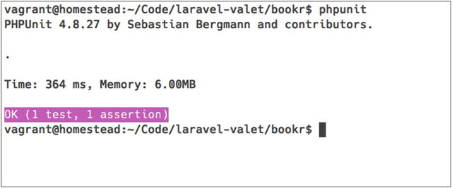

Unfortunately, the world doesn’t have much demand for “Hello World” APIs, and working on trivial applications is not going to help you for long. We are ready to start building something of more substance, driven by tests. For the remainder of this book, we will create a RESTful (hopefully) book API. The book API will represent two main RESTful resources (books and authors) and a few other resources. You will be writing a RESTful API, and while I try to follow good practices, it might not be perfectly “RESTful.” I digress.
You will see some similarities between writing APIs and web applications in this book, such as routing, models, database associations, and the like. We will cover specific challenges and needs that differ from traditional web applications. As we work on the book and author resources, we will also include validation, ways to structure response data, and error handling, among other API-specific topics.
Before we can start writing the API, we need to define and set up the application to store your virtual library of books. In true web-naming fashion, our virtual library will be known to the world as Bookr.
Bookr will be developed in small, test-driven increments of code. You will get accustomed to running tests often, and I will show you a couple of my favorite workflows around testing. I think you will begin to realize how easily you can write fully-tested APIs with Lumen!
Source Code
If you get stuck or you want to see the source code, you can download it from
https://bitbucket.org/paulredmond/apress-bookr
.
Building Something Amazing
If you’ve used Laravel before, you are probably familiar with the love and attention to detail that make the Laravel ecosystem amazing! Without further ado, let’s start by creating a new project on the Homestead virtual machine (Listing 3-1).
# On your local machine
$ cd ∼/Code/Homestead
$ vagrant ssh
# In the virtual machine
vagrant@homestead:∼$ cd ∼/Code
vagrant@homestead:∼/Code$ composer create-project \
laravel/lumen=∼5.2.0 --prefer-dist bookr
vagrant@homestead:∼/Code$ cd bookr
Listing 3-1.
Creating a New Lumen Application in Homestead
Next, put your application under version control on the Homestead virtual machine (Listing 3-2).
# vagrant@homestead:∼/Code/bookr$
$ git init
$ git add .
$ git commit -m"Initial commit of Bookr"
Listing 3-2.
Adding the Application to Version Control
Initial commit of Bookr
67e024d (https://bitbucket.org/paulredmond/apress-bookr/commits/67e024d)
Lumen ships with sensible .gitignore defaults so don’t be concerned with running git add . for the initial commit.
Keep Private Things Private
Avoid committing sensitive information (such as database passwords) to version control. Lumen uses the phpdotenv (
https://github.com/vlucas/phpdotenv
) library to load environment configuration, making it really easy to keep sensitive data out of your code.
Next, you need to configure your new application locally in ∼/.homestead/Homestead.yaml. On your local machine, add the configuration shown in Listing 3-3.
sites:
- map: hello-lumen.app
to: /home/vagrant/Code/hello-lumen/public
- map: bookr.app
to: /home/vagrant/Code/bookr/public
databases:
- homestead
- bookr
- bookr_testing
Listing 3-3.
Adding Bookr Site Configuration in Homestead.yaml
You’ve added a site configuration and two databases that Homestead will create when you run vagrant provision. The bookr database is the development database, and the bookr_testing database will be your testing database in a later chapter. Save the configuration, and provision the virtual machine by running the code in Listing 3-4 locally.
$ cd ∼/Code/Homestead
$ vagrant provision
Listing 3-4.
Provisioning Vagrant Locally
Once provisioning is complete, you are ready to add bookr.app to your local system’s hosts file. Update the hosts file entry you added in Chapter 2 by editing /etc/hosts (or C:\Windows\System32\drivers\etc\hosts on Windows) and make it look like Listing 3-5.
192.168.10.10 hello-lumen.app bookr.app
Listing 3-5.
Updating the Hosts File
Be sure you use the correct IP address from your _/.homestead/Homestead.yaml file!
You are done setting up the application on Homestead. If you visit
http://bookr.app/
in your browser, you should now see the same “Lumen” text you saw in Chapter 2.
Now that you have a working application on Homestead, you should be able to connect to your MySQL databases. If you read the “Connecting to Databases” section (
https://laravel.com/docs/5.2/homestead#connecting-to-databases
) in the Homestead documentation you should be able to connect with your favorite MySQL GUI app or the console. I personally like Sequel Pro (
www.sequelpro.com/
) on OS X. At the time of this writing, you can connect to Homestead’s MySQL server with the code in Listing 3-6 from your local terminal if you have the MySQL client installed.
> mysql \
-u homestead \
-h 127.0.0.1 \
-P 33060 \
-psecret
mysql> show databases;
+--------------------+
| Database |
+--------------------+
| information_schema |
| bookr |
| bookr_testing |
| ... |
+--------------------+
mysql> exit
Bye
Listing 3-6.
Connecting to Homestead Bookr Databases
Environment Setup
Now that the project is set up and under version control, you need to create a .env file. The .env file is used to set up an environment-specific configuration which is used by Lumen. I will show you how configuration files use environment variables later on. For now, copy the .env.example file that ships with Lumen for your development environment (Listing 3-7).
$ cd ∼/Code/Homestead
$ vagrant ssh
# ...
vagrant@homestead:∼$ cd Code/bookr/
vagrant@homestead:∼$ cp .env.example .env
Listing 3-7.
Copying the Example .env File
Repeatable Environments
I recommend keeping .env.example under version control and up to date with any configuration used in your application. The .env file is ignored by git to keep sensitive data out of your repo. That means that another developer pulling your changes will not have any new environment variables you’ve added in his or her .env file.
Keeping track of environment variables can be frustrating when you pull changes and things stop working. Having an accurate starting point in .env.example makes it easy for a new developer to get an environment going and for developers to see what has been added or changed.
We will use as many conventions as possible in your environment. Since Lumen defaults to using MySQL, we will stick with that convention. Open .env (around Line 8 at the time of writing) and you will see the MySQL credentials shown in Listing 3-8.
8 DB_CONNECTION=mysql
9 DB_HOST=localhost
10 DB_PORT=3306
11 DB_DATABASE=bookr
12 DB_USERNAME=homestead
13 DB_PASSWORD=secret
Listing 3-8.
The .env Database Connection Configuration
If you are using Homestead, the .env.example file already contains the correct MySQL credentials, and the only thing you need to change is DB_DATABASE=bookr; if you are using your own environment, adjust accordingly.
Quick feedback is fun. Its time to try out your new configuration! Run the code in Listing 3-9 on the Homestead server.
vagrant@homestead:∼/Code/bookr$ php artisan migrate
Migration table created successfully.
Nothing to migrate.
Listing 3-9.
Running the artisan migrate Command
Sweet! Your database and environment configurations are ready to go.
If we want to hit the ground running on the first endpoint in the next chapter, we need to do a little more setup. Lumen doesn’t assume that we need or want to use object-relational mapping (ORM), but Eloquent (
https://laravel.com/docs/5.2/eloquent
) is a really nice ORM, and I personally think it’s worth using in Lumen.
How do you enable Eloquent in Lumen? Back to your app bootstrap file, bootstrap/app.php, to uncomment a few lines. You should also enable Facades (
https://laravel.com/docs/5.2/facades
) at the same time, so uncomment the following two lines shown in Listing 3-10.
26 $app->withFacades();
27
28 $app->withEloquent();
Listing 3-10.
Enabling Facades and Eloquent
Now commit your changes (Listing 3-11).
# vagrant@homestead:∼/Code/bookr$
$ git commit -am"Enable Facades and Eloquent"
Listing 3-11.
Commiting the Application Configuration
Enable Facades and Eloquent
Before moving on to the final setup task, I’d like to show you quickly how these environment settings work. Lumen has all of the default PHP configuration files located in the vendor/laravel/lumen-framework/config folder. Feel free to take a peek now.
If you create a config/ folder in the root of the project, you can copy over config files and the application will read your copied file instead of the vendor config file.
The following code example is the default MySQL configuration that ships with Lumen, which may vary slightly from the time this was published. This example will give you an idea of how Lumen uses env() for configuration. By using env() you can use the .env file to get what you want without copying the vendor/laravel/lumen-framework/config/database.php configuration file to the project’s config/ folder.
60 'mysql' => [
61 'driver' => 'mysql',
62 'host' => env('DB_HOST', 'localhost'),
63 'port' => env('DB_PORT', 3306),
64 'database' => env('DB_DATABASE', 'forge'),
65 'username' => env('DB_USERNAME', 'forge'),
66 'password' => env('DB_PASSWORD', ''),
67 'charset' => 'utf8',
68 'collation' => 'utf8_unicode_ci',
69 'prefix' => env('DB_PREFIX', ''),
70 'timezone' => env('DB_TIMEZONE', '+00:00'),
71 'strict' => false,
72 ],
Default Database.php Config (Partial Source):
The env() function will get the value for the first argument; if the configuration doesn’t exist, the second argument is the default. When you ran your failed migration command earlier, the application configuration was using the defaults.
Checking Unit Tests
Lumen uses PHPUnit for tests. When creating new projects, I recommend ensuring that PHPUnit is running properly. In my experience, if I don’t test early and often, it becomes increasingly difficult to commit to testing in a project. Try running the PHPUnit suite that ships with Lumen:
vagrant@homestead:∼/Code/bookr$ vendor/bin/phpunit
OK (1 test, 1 assertion)
Running phpunit Tests
PHPUnit is a composer dependency, and you execute tests by referencing vendor/bin/phpunit. If all went well, you should see green! Lumen ships with an example test class which is passing. The example tests let you know things are working as expected.
You will become very comfortable writing tests as you work through this book, but for now you just need to know you have everything working so you can focus on writing your application (Figure 3-1).

Figure 3-1.
PHPUnit success
PHPUnit Alias on Homestead
On Homestead you can simply run phpunit without referencing the vendor/bin path.
Homestead creates an alias for you defined on your local machine in the ∼/.homestead/aliases file. You can also add your own aliases to that file.
I also have ./vendor/bin to my path when I am not using Homestead: export PATH=./vendor/bin:$PATH
You can also install PHPUnit on your system. Refer to the official installation documentation (
https://phpunit.de/manual/current/en/installation.html
).
Setup Complete
With minimal setup, we are in good shape to start writing the first API endpoint: books. Setup was simple, but we covered many important steps that I like to perform at the beginning of an application. Getting a working database and unit tests will go a long way in helping us focus on writing the API. We are establishing conventions and good practices early.